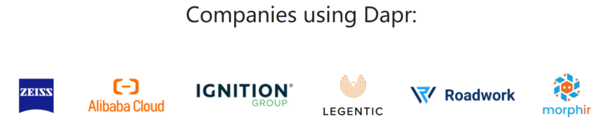
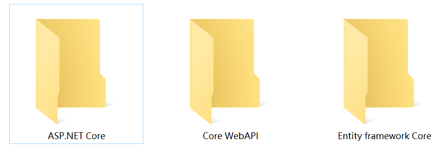
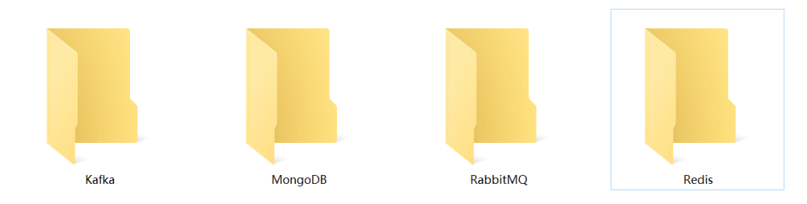
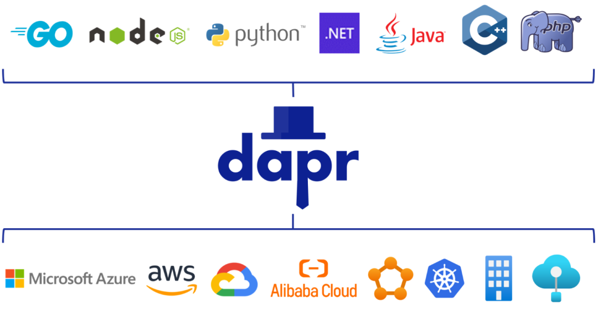

Dapr v1.0正式版发布半年，影响力越来越大，其分布式应用运行时的设计思想代表着微服务的未来，较之当下流行的Spring Cloud、Istio，更具前瞻性。难怪很多Java人直呼”狼来了“，甚至连国内Java标杆阿里巴巴，也迁移Dapr了。

Dapr是什么，能干什么，怎么干的，下文会长篇累牍介绍，然而百闻不如一见，动手实操才是学习的最好途径。今晚八点，硬核架构师Clay将直播分享《Dapr微服务电商实战训练营》，搭建Dapr和Kubernetes集群全套环境，手撸微服务架构电商多节点业务，演练发布订阅、服务注册发现、全局分布式锁、定时作业回调等核心功能，带你快速上手Dapr微服务开发部署。训练营对本号粉丝全部免费，希望能增加社区对Dapr的认知。下图海报直接扫码进微信群(或添加微信：zhaoxi005)，今晚八点开启Dapr实战旅程！
要学习Dapr，相关的技术储备还是不能少的，否则只能照葫芦画瓢学个皮毛了。以下几块技术栈是需要了解的：
1 、精通.NET Core
这个简直是必须的了，不过包含的内容也多，ASP.NET Core、EFCore、Core WebAPI等都是需要的，下面是完整的.NET5零基础到实战全套教程，三块儿内容全部包含，看完快速上手跨平台开发是毫无问题的。

2、高并发组件
Dapr兼容主流的高并发组件，甚至通过封装支持底层数据容器的无感切换，但是想真的用好Dapr，像Redis、MongoDB、RabbitMQ、Kafka等高并发中间件，是一个都不能少的！

3、微服务云原生
Dapr就是为了解决微服务的一系列问题的，但要真的理解Dapr核心价值，对微服务是必须要了解的，如其中的服务注册发现、网关服务治理、分布式锁等各种内容都需要知道的。这里有一套微软MVP亲讲的《.NET5+Docker落地微服务架构》教程，微服务架构各组件和要素都覆盖，看完必然大有收获的！
.NET近些年发展喜人，高薪岗位也多，然而要求也是水涨船高的。不管是马上到来的金九银十，还是明年的金三银四，学习真的该立即开始了，切莫书到用时方恨少。上面这些资源，都精心整理好了，请务必扫码(微信号：zhaoxi005)领取，开始学习！
扫码添加-免费领取全部资料
也可添加微信 zhaoxi005
Dapr是2019年开源，2021年1月发布第一个正式版，很多小伙伴可能听过见过，但是不一定清楚Dapr是什么。下面尝试简要梳理下Dapr，从Dapr是什么（What），可以解决什么样的问题（Why&How），有怎样的应用场景（Where），来为大家解析下！
Distributed Application Runtime. An event-driven, portable runtime for building microservices on cloud and edge.分布式应用运行时。一个事件驱动、可移植的运行时用于在云上和边缘计算上构建微服务。
以上是Dapr官方简介,文字虽短，口气却很大，不仅涵盖了当前所有的技术热点：分布式、云、微服务，还自我标榜为：分布式应用运行时，也就是提供分布式应用运行所依赖的执行环境。这个就太难了，因为需要解决以下3个难题：
1 异构的机器与网络：稳定性问题
2 普遍的节点故障：可靠性问题
3 不可靠的网络：一致性问题
解决这些问题，意味着应用除了需要实现业务需求，还要兼顾非业务需求，集成诸如服务发现、负载均衡、失效转移、动态扩容、数据分片、调用链路监控等分布式系统的核心功能，对应用有很强的侵入性，这就是以Spring Cloud为代表的微服务框架的常见做法，也对开发者提出了太高的要求，这也是微服务门槛太高，中小企业难以推行的根本原因。
随后诞生了Service Mesh的Sidecar模式，通过包一层来解决服务发现、负载均衡、请求熔断等一系列非业务需求，然而却解决不了分布式运行时需求的生命周期（Lifecycle）、状态（State）、捆绑（Binding）等问题，这时，Dapr登场了，Dapr将分布式能力进行封装下沉作为运行时以简化分布式应用开发的技术复杂度。直白点说，就是让开发者可以聚焦业务，而不用考虑在分布式环境运行的问题了。
那Dapr如何简化分布式应用的开发呢？下面我们来看一看Dapr的主要特性。看图说话：Dapr通过以HTTP/gRPC API这种与语言无关的方式暴露封装的分布式能力供应用调用，从而支持使用任意语言或框架进行开发集成。目前官方已经提供了Go，Node，Python，.NET，Java， C++，PHP，Rust，Javascript的Sdk，简化Dapr的集成。

了解了Dapr是什么，以及其提供的特性，那Dapr的应用场景就一目了然了。也就是官网首页的口号：Simplify cloud-native application development--Focus on your application’s core logic and keep your code simple and portable。简化云原生应用的开发，确保应用专注于业务，并保证代码简单可移植。因此，在考虑云原生应用开发的技术选型时，Dapr是一个不错的选项，阿里云已然在用了。
上述内容和观点部分借鉴自微软MVP圣杰，已获取本人许可。
IT技术日新月异，.NET尤甚，VS2022、.NET6、C#10、Dapr，新东西层出不穷，日常开发可能接触不到，遇到问题无人解决，网上资料也比较零碎，推荐进下这个《.NET5高薪学习群》，一起学习交流，尽早升职加薪！扫码进群(或加微信号：zhaoxi005)，Let's Go!
扫码即可受邀加入

添加微信 zhaoxi005也可


发表评论 取消回复